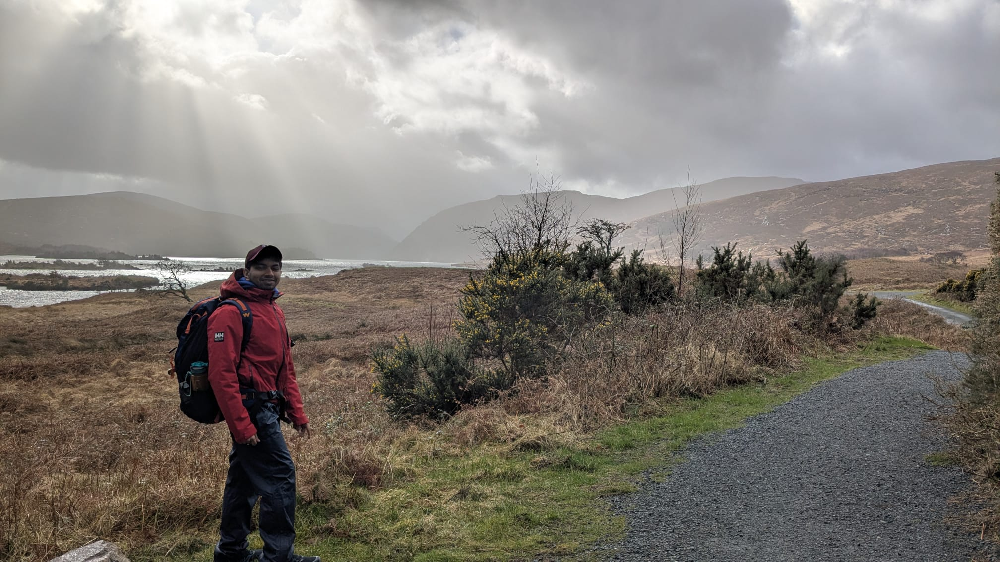
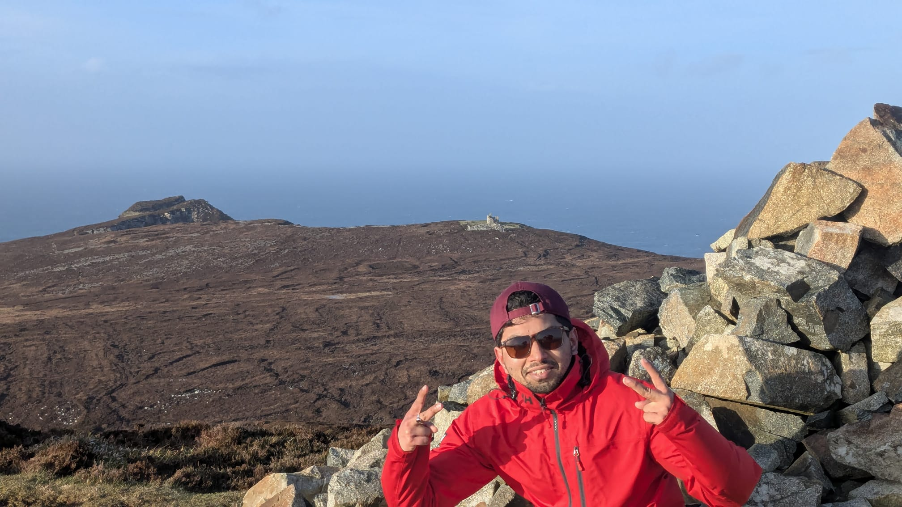

Senior Software Engineer · Dublin, Ireland
I build distributed systems that move fast and don't break things — event-driven architectures, real-time pipelines, and AI-integrated backends running at production scale in safety-critical environments.
// background
I'm a Senior Software Engineer with over five years of experience designing and shipping distributed, event-driven systems across IoT, enterprise software, and safety-critical aerospace domains. I care deeply about reliability, observability, and system design — writing code that the next engineer (including future me) can reason about.
My engineering background is complemented by a Master's in Computer Vision & AI from the University of Limerick, where I researched real-time multi-camera pose estimation on edge hardware. I enjoy bridging the gap between applied machine learning research and production backend systems.
When I'm not at a keyboard, I'm usually at altitude — hiking, trekking, or planning the next mountaineering objective. The mountains have taught me more about patience, preparation, and judgment than any book.
// career
Building mission-critical distributed microservices for real-time aerospace applications using AMQP-based messaging. Implemented observability pipelines for end-to-end system visibility and designed safety-critical alerting systems operating under strict latency and correctness requirements.
Developed scalable IoT backend systems processing high-throughput sensor data. Designed Kafka-based streaming pipelines and containerised Spring Boot services deployed on Kubernetes, serving global manufacturing customers.
Built enterprise microservices and workflow automation systems for large-scale clients. Delivered REST APIs, data processing pipelines, and document management workflows using Spring Boot and MongoDB.
// selected work
Distributed computer vision system using YOLO + HRNet for real-time human pose estimation on Qualcomm RB3 edge hardware. Designed scalable inference pipelines coordinating multiple camera feeds simultaneously.
End-to-end face recognition pipeline built with OpenCV and TensorFlow, optimised for real-time inference with minimal latency on commodity hardware.
Convolutional neural network models achieving >90% accuracy on MNIST. Explored architecture depth, regularisation strategies, and training efficiency.
// research & publications
IMC41 — 41st International Manufacturing Conference · 2024
Presents a two-stage embedded AI system for automated visual inspection of daisy chain wiring assemblies in smart manufacturing. YOLOv8 performs object detection at ~36.6 FPS and HRNet delivers keypoint-based pose estimation at ~31.7 FPS, both running entirely on-device on the Qualcomm RB3 Gen2 Vision Kit (QCS6490) — removing cloud dependencies and meeting the latency and reliability demands of Industry 4.0 production lines.
University of Limerick · MEng Computer Vision & AI · 2024
Designed and deployed a distributed computer vision system coordinating multiple camera feeds for real-time human pose estimation on the Qualcomm RB3 Gen2 edge platform. The system combines YOLO-based detection with HRNet keypoint localisation inside a GStreamer inference pipeline, demonstrating scalable edge AI architecture suitable for industrial and safety-critical perception applications.
EE6008 Deep Learning at the Edge · University of Limerick · 2025
Built a real-time American Sign Language classifier deployable entirely on the OpenMV edge camera — no cloud required. The team collected a custom 26-class dataset (50 images per letter across five contributors), trained a CNN on Edge Impulse, and deployed a TFLite model achieving 84.7% test accuracy with per-letter inference running live on-device. The project surfaces key lessons in dataset consistency, embedded ML constraints, and INT8 quantisation for low-power hardware.
CE6023 Computer Vision Systems · University of Limerick · Dec 2024
Designed and deployed a real-time computer vision pipeline on a Raspberry Pi 4 combining TensorFlow Lite for object detection and OpenCV Haar Cascade for face detection. The system was stress-tested across three lighting conditions — brightly lit indoors, morning outdoors, and evening outdoors — achieving 0.75–0.85 confidence in optimal lighting and logging entry/exit events with timestamped inference data. Includes a modular, extensible architecture with threaded video capture, CSV-based telemetry logging, and matplotlib visualisation of confidence and inference-time trends over time.
// academic
Research focus on real-time distributed vision systems, multi-camera pose estimation, and edge AI inference. Thesis deployed on Qualcomm RB3 hardware in a live multi-camera environment.
Foundation in algorithms, data structures, operating systems, and software engineering. First-class honours.
// outside the terminal
I believe the skills that make a great engineer — patience under uncertainty, systematic problem-solving, reading conditions carefully — are the same ones that keep you alive in the mountains. The outdoors keeps me honest.

High-altitude ascents, technical terrain, and the silence above the clouds.

Long-distance trails, wild camping, and the Irish hills closer to home.